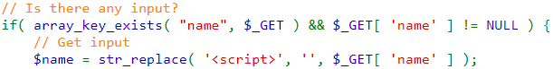
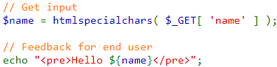

The minimum patch for this vulnerability is disabling the attackers by not letting them use words like
`script`.

Using htmlspecialchars() will remove any HTML controlling charaters from the HTTP request.

Add content security policies to your webpages. You can tell the browser to never execute inline
JavaScript, hence nullifying this attack completely. You can find more about possible fixes and patches
here.
Now, you can try this by yourselves!